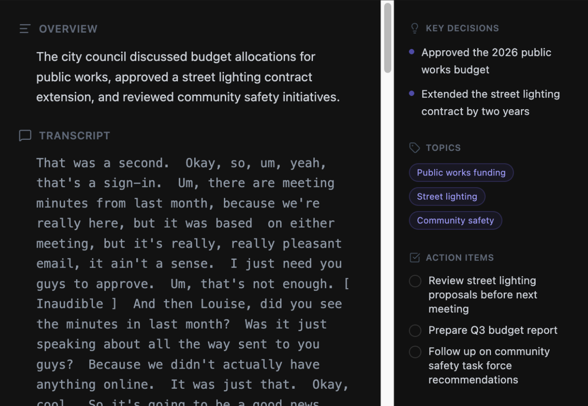

Meeting transcript, summary, action items.
without wifi.
Meeting transcribes in real time. Bring your own LLM writes for summary. Nothing leaves your machine.
No account needed · Works offline after setup
How it works
Hit F1 from any app
VOA starts listening in any context. Zoom, your browser, the terminal. The same key starts and stops recording.
Speak normally
VOA detect silence on speech then perform transcription without interuption
Get your transcript
Your transcript saves on your machine. Connect your own AI model to unlock VOA's full power.
What's under the hood
Production-grade local models. No cloud shortcuts.
One key, from anywhere
F1 starts and stops recording regardless of which app is focused. Works in Zoom, Google Meet, your browser, or a terminal window.
Runs on your machine
Whisper AI handles transcription. Connect your own instruct model handles summaries. Both run on your machine and never send a byte outside your Mac.
Auto-labels your meetings
VOA reads macOS Accessibility APIs to detect when you're in Zoom, Teams, Google Meet, or Slack and names the recording for you.
Summaries, not just transcripts
Reads your transcript and pulls out what mattered: decisions made, tasks assigned, and topics that took the most time.
- check_circle Key Decisions
- check_circle Action Items
- check_circle Topic Breakdown

Coming in future releases
Three things worth waiting for.
Search across every recording
Find the moment someone said "let's ship it" or "budget approved." Search by keyword, topic, or date across your full transcript history.
- arrow_right Full-text transcript search
- arrow_right Topic & keyword filters
- arrow_right Jump to exact timestamp
Group related meetings
Cluster recordings by series: stand-ups, interview rounds, client sprints. VOA detects recurring patterns and links related sessions.
- arrow_right AI-detected recurring series
- arrow_right Manual grouping & labels
- arrow_right Cross-session summaries
One view for every open task
Every action item from every meeting in one place. See what's open, what's done, and which meeting it came from.
- arrow_right Aggregated across recordings
- arrow_right Mark complete in one click
- arrow_right Linked to source meeting
Zero Data Exposure
Your audio processes in memory and never writes outside your Mac.
Your audio never leaves your Mac.
Most AI tools route your audio through data centers you don't control. VOA runs the models locally. No API keys. No fine print. Full offline functionality once you download the models.
No telemetry
No tracking, no analytics. We don't know you downloaded the app.
Works off-line
Transcribe with no internet connection after the first model download. Useful in secure facilities or on a plane.
Read the code
MIT licensed. Every line is on GitHub. No hidden behavior, no undocumented network calls.
Own your recordings.
Free, open source, and runs on your Mac.